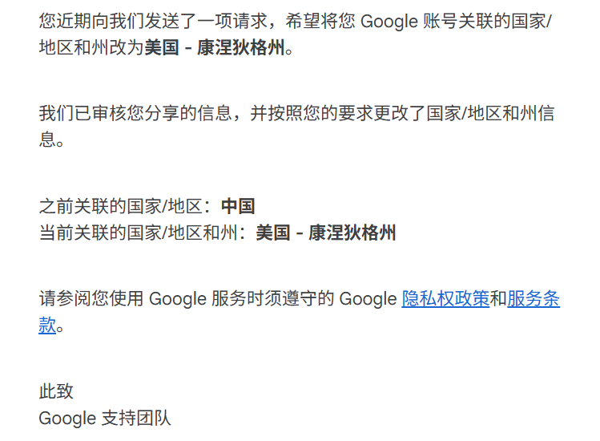
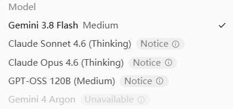
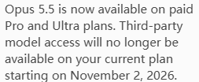
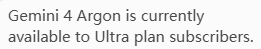

重新装回 Antigravity：折腾一天后，我看清了 AI 的付费边界
今天重新把 Antigravity 装了回来。本来只是想试试最近的模型和工作流，结果从登录开始就一路碰壁：账号无法正常登录，地区也不支持使用。
我花了半天处理这件事：查资料、排查网络链路、确认账号地区，再联系 Google 支持团队。最后，账号关联的国家/地区和州信息经过审核并完成调整，官方邮件也在当天发了回来。Antigravity 终于能正常打开了，但新的问题马上出现：账号没有升级，能用的模型非常有限，最新的 Claude 5.5系列模型也没有使用额度，Gemini 4 Argon 没有权限，实际能稳定使用的主要是 Gemini 3.8 Flash 和一些旧模型，而且还带有限额。
这次经历像一场很小的 AI 时代预演：入口可以免费，登录可以解决，地区也可以经过审核处理，但真正有价值的模型和额度，已经被清楚地放在了订阅墙后面。忙活了一大圈以后，我得到的不是“终于解锁了一个免费工具”，而是更明确地意识到：AI 的全面付费时代，已经悄悄开始了。
目录
- 登录问题与网络排查
- 地区不支持与官方审核
- 模型权限又是一道墙
- 从豆包到 Google：免费 AI 正在改变什么
- AI 时代真正需要购买的是什么
一、登录问题与网络排查
今天最先遇到的是登录不上账号。网页和应用本身没有给出足够明确的报错，我一开始也无法判断究竟是账号、浏览器还是网络的问题。于是我查阅了 Google 的帮助文档、社区讨论和代理工具关于系统代理与 TUN 模式的说明，把问题拆成几个环节：登录页面能否打开，验证请求能否发出，应用内的请求是否真的经过代理，以及 DNS 和系统网络接口是否走了同一条链路。
查资料的过程让我意识到，普通代理和 TUN 模式解决的并不是同一件事。前者往往只影响显式遵循系统代理设置的流量，后者则更接近为系统建立一层虚拟网络接口，让没有读取代理设置的应用也能把请求送入代理链路。切换到 TUN 模式后，登录验证终于完成了。
这不是一个可以对所有人照搬的“登录教程”，因为网络环境、客户端和代理工具都会影响结果。但排查思路是通用的：先确认网络请求是否到达，再确认账号是否通过验证，最后才判断产品是否向当前账号开放功能。
TUN 模式解决的只是网络这一层，并不等于已经获得 Antigravity 的使用资格。这个区别后来在第二关里再次出现。
二、地区不支持与官方审核
登录进去以后，Antigravity 又提示我当前地区不支持使用。我的第一反应是检查 Google 账号的国家/地区和州信息，以及账号之间的关联状态。之后我通过 Google 支持渠道提交了变更请求，等待官方处理。
当天我就收到了回复。邮件明确写着，Google 已经审核我提供的信息，并按照请求把关联的国家/地区和州信息更新为美国、康涅狄格州：

这封邮件对我来说很关键，因为它说明这次变化至少经过了官方支持流程，而不是单纯依靠客户端表面上的设置。地区信息在很多互联网服务中都不是一个普通的个人偏好，它会影响可用产品、付款方式、内容政策、隐私条款和账号风控。
这里也需要把边界说清楚：我记录的是一次经过官方审核的账号处理经历，不建议伪造地址、身份或付款信息来绕过服务限制。地区设置如果与真实情况不一致，可能带来付款失败、账号复核、服务中断甚至违反服务条款的风险。对于任何地区限制，优先使用官方支持渠道，了解规则以后再决定是否继续使用。
三、终于能用了，但模型权限又是一道墙
Antigravity 终于正常打开以后，我本以为今天的折腾到此结束。结果模型列表把现实说得很直接：

当前账号能直接选择的是 Gemini 3.8 Flash，其他模型旁边出现了不同形式的提示。Claude Sonnet 4.6 Thinking、Claude Opus 4.6 Thinking 和 GPT-OSS 120B 都更像是“看得到但用不了”的选项。最新的 Gemini 4 Argon 则直接显示为不可用。
我又点开了其中的说明，看到这样的提示：Opus 5.5 已经只在付费的 Pro 和 Ultra 计划中提供，第三方模型访问也会从某个日期开始不再属于当前套餐。

这类提示最容易制造一种错觉：模型已经出现在界面里，所以用户以为自己只差一个开关；实际上，界面展示的是产品全貌，账号能使用的只是其中一个切片。产品把“可见性”和“可用性”分开了，模型名称越多，免费用户越容易产生一种已经拥有很多能力的感觉。
Gemini 4 Argon 的提示更加直白：

它目前面向 Ultra 计划订阅者提供。换句话说，这个模型对我来说不是“额度很少”，而是“免费额度为零”。这两个说法的心理感受完全不同：前者意味着省着用还能体验，后者意味着它只是产品橱窗里的一件商品。
四、从豆包到 Google：免费 AI 正在改变什么
今年以来，我越来越明显地感觉到，国内外 AI 产品都在把免费和付费的边界划得更清楚。以豆包等产品为例，很多基础能力仍然可以直接使用，但更高阶的模型、更多上下文、更稳定的调用次数和更复杂的任务，开始逐渐进入会员、套餐或限额体系。
这种变化并不奇怪。训练和运行大模型都需要持续的 GPU、存储、网络和推理成本。一个用户每天生成几段文字，成本也许不明显；当用户让模型长时间阅读资料、运行代码、生成图片、反复修改文档时，成本会迅速累积。免费产品不可能无限期地把最贵的能力全部开放给所有人。
但从用户角度看，变化仍然会带来失落。我们经历过一个“先让大家养成使用习惯，再逐渐分层收费”的阶段。用户已经把 AI 放进搜索、写作、编程、学习和生活安排里，工具却开始重新告诉我们：习惯可以免费，生产力要付费。
Google 的做法尤其能代表这种趋势。它并不只是在卖一个聊天机器人，而是在把模型能力、云服务、办公生态、开发者工具和账号体系连在一起。免费额度的作用，是让用户进入生态；订阅的作用，是让高频用户为更强模型、更多额度和更稳定的服务买单。地区策略和账号关联信息，则是这个生态能够按国家、支付能力和监管环境进行分层的基础设施。
这并不意味着 Google 一定“变坏了”，也不意味着免费 AI 没有价值。更准确的说法是：AI 产品的商业模式已经成熟到足以把不同用户的成本和价值区分开。我们需要做的，是停止把免费试用误认为永久权益。
五、AI 时代真正需要购买的是什么
我今天最初想要的只是“重新用上 Antigravity”，最后却被迫思考一个更大的问题：在 AI 时代，我们究竟在为什么付费？
表面上，我们购买的是更强的模型；再往下看，购买的是更大的上下文、更高的调用上限、更短的等待时间、更稳定的服务和更少的折腾。对于普通用户来说，真正昂贵的可能不是某一次回答，而是反复切换工具、重新上传文件、重新解释背景、重新适应规则所浪费的时间。
所以，付费并不自动等于被收割，免费也不自动等于划算。关键在于付费后获得的能力，是否和自己的工作强度匹配；关键在于一个平台有没有把规则说清楚，是否允许用户带走自己的数据，是否给出稳定而可预期的服务。
今天我没有升级账号，也没有因为看到 Gemini 4 Argon 就立刻订阅。不是因为我永远不愿意为 AI 付费，而是因为我想先弄清楚自己的需求：我需要的是每天偶尔问几个问题，还是需要一个真正参与学习、编程和研究的长期助手？只有前一个问题被回答清楚，后一个问题才值得花钱。
这次经历最后留下的不是“Google 终于让我用了”，而是一种更清醒的消费观：AI 工具会越来越强，也会越来越贵；免费层会继续存在，但它的任务更可能是让你认识产品，而不是承担全部生产力。我们可以享受免费工具带来的便利，也应该接受算力有成本、服务有边界的现实。
真正重要的能力，仍然不是拥有最多的订阅，而是知道什么时候需要 AI、什么时候不需要，知道如何验证它的答案，知道如何保留自己的判断，并且在某个模型突然不可用时，仍然能够综合使用多家ai工具把事情做完。
忙活了半天，最后只拿到了几个免费模型和一组限额。看起来有点亏，但它至少让我更加看见了这个时代的规则：AI 的入口正在变得越来越便宜，AI 的持续生产力正在变得越来越昂贵。
而我们要学会的，可能不是追逐每一个新模型，而是判断什么值得长期购买，什么只适合路过看一眼。